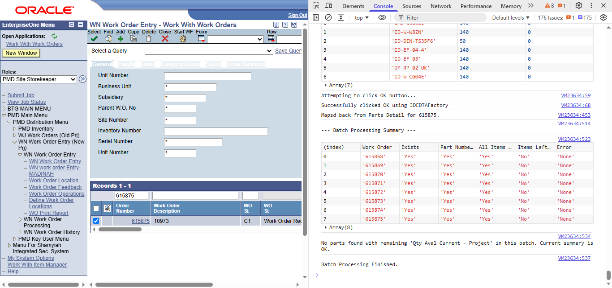

After 14+ years in operations, I learnt to code with the 100Devs community — 2022 — and turned my own department's biggest bottleneck into a production automation system that cut manual work by 90%. Since then: full-stack platforms, a live content platform with full-text search, and a run of real-time data visualizers. CKA and Oracle Cloud certified.
—14+ years in construction operations, with deep hands-on knowledge of the Oracle JD Edwards work-order process from end to end.
—By 2024, I'd learnt enough to automate that workflow myself — an end-to-end pipeline (Python, JavaScript, VBScript, AutoIt) with Claude-API PDF extraction, processing 3,300+ orders with a 90% reduction in manual handling time.
—Designed a modular architecture across five components — PDF processing, work-order creation, material management, inventory, and document handling — with retry logic, validation, and logging throughout.
—Ran day-to-day operations and document workflows — BOQs, payment certificates, material submittals, MS Project schedules, and multi-party contract correspondence — the Oracle JD Edwards domain knowledge the automation is built on.
Jan 2022 — Present
100Devs (Leon Noel) Cohort 2
Full-Stack Development — 100Devs
—Went from zero to shipping full-stack applications with the 100Devs community — JavaScript, Node, MongoDB, and modern web fundamentals.
—Built and deployed the platforms, PWAs, and real-time visualizers below — most are live, and rasmihassan.com serves a real user base.
02
Selected work
08 projects

Flagship · Production automation
JDE Work Order Automation System
Enterprise pipeline · deployed at BT Applied Technology
An end-to-end automation system for Oracle JD Edwards work orders — from Claude-API PDF extraction and field mapping through to automated inventory and document handling. Five integrated components with retry logic, validation, and logging across every stage. Running in production and processing work orders weekly.
Python
JavaScript
VBScript
AutoIt
Claude API
Browser Automation
Proprietary enterprise system — walkthrough available on request
A live full-stack platform hosting and searching two scholars' archives — 3,200+ audio files, 116 PDFs, and 300+ articles in total — with full-text search across the whole library. Node/MongoDB backend, Google authentication, media served from Cloudflare R2 and Oracle Cloud object storage, with Sentry and Grafana wired in for error tracking and monitoring.
A cloud-synced, installable PWA for tracking memorization across all 30 Juz — daily logging, streaks, and statistics. Backed by Node/Express and MongoDB Atlas with OAuth (Google + GitHub) and JWT, plus an on-device speech-recognition coach that scores recitation entirely in the browser.
A configurable, offline-first CRM: pick prebuilt modules (contacts, deals, tasks, leads) or design custom ones with your own fields, icon, and branding. Table and kanban views, 30-currency support, and JSON backup/restore. Node/Express and MongoDB in the cloud, IndexedDB for local-first sync, Google OAuth, and a service worker for full offline use.
A retrieval-augmented Q&A service that returns answers grounded in the source passages it cites. PostgreSQL with pgvector holds both the text and the vector index, so there's no separate vector database. Typed and tested end to end — pytest and mypy (strict) with GitHub Actions CI.
A client-side 3D console that tracks ~12,000 live satellites — pulling element sets from CelesTrak and propagating orbits with SGP4 in the browser. A textured NASA Blue Marble globe with a real day/night terminator, click-to-inspect telemetry, and replays of historic launches and deep-space probe missions.
A rotating 3D globe that lights up as Bitcoin transactions hit the mempool, streamed live over WebSocket. Large transfers trigger scaled effects — "whale" and "mega-whale" events get a camera lock and screen shake — with a live HUD of rolling volume and BTC-USD pricing. Runs with no API keys.
A real-time dashboard tracking vessels through the Strait of Malacca, Strait of Hormuz, and the English Channel. Streams live AIS data over WebSocket, classifies ships by cargo type, supports search by name/IMO/MMSI, and computes per-region risk KPIs — served through a Cloudflare Pages Worker with a graceful demo-mode fallback.
I'm open to remote full-stack, backend, or automation roles worldwide. If any of the work above lines up with what you're building, I'd be glad to walk you through it.